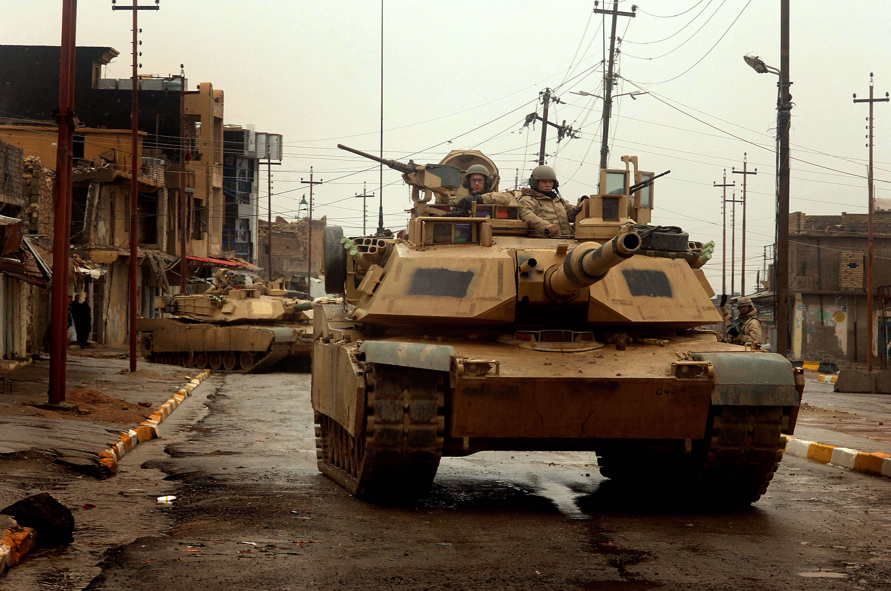

Война в Ираке 2003-2011
Война в Ираке, которая продолжалась с 2003 по 2011 год, является одним из самых значимых событий в мировой истории начала XXI века. Этот конфликт был вызван США и их союзниками на основе утверждений о наличии ядерного оружия в Ираке и связях страны с террористическими организациями.
Однако, после свержения режима Саддама Хусейна, оружие массового поражения так и не было обнаружено, и многие аспекты ведения войны начали вызывать критику и сомнения. Кроме того, иракский конфликт привел к новым проблемам в регионе, таким как усиление суннитско-штейншейтских противоречий, нарастание террористической активности и рост числа жертв среди мирного населения.
Один из наиболее опровергаемых аргументов в пользу начала войны было утверждение о наличии связей Ирака с террористическими организациями, в частности, с Аль-Каидой. Однако, даже после окончания военных действий, такие связи не были доказаны.
Война в Ираке также вызвала острой критики в международном обществе. Многие страны и международные организации осуждали США за военное вмешательство в дела другой страны без разрешения ООН.
Таким образом, война в Ираке 2003-2011 стала одним из самых спорных и обсуждаемых событий в истории международных отношений. Ее последствия ощущаются до сегодняшнего дня, когда Ирак продолжает страдать от террористических атак и внутренних конфликтов.